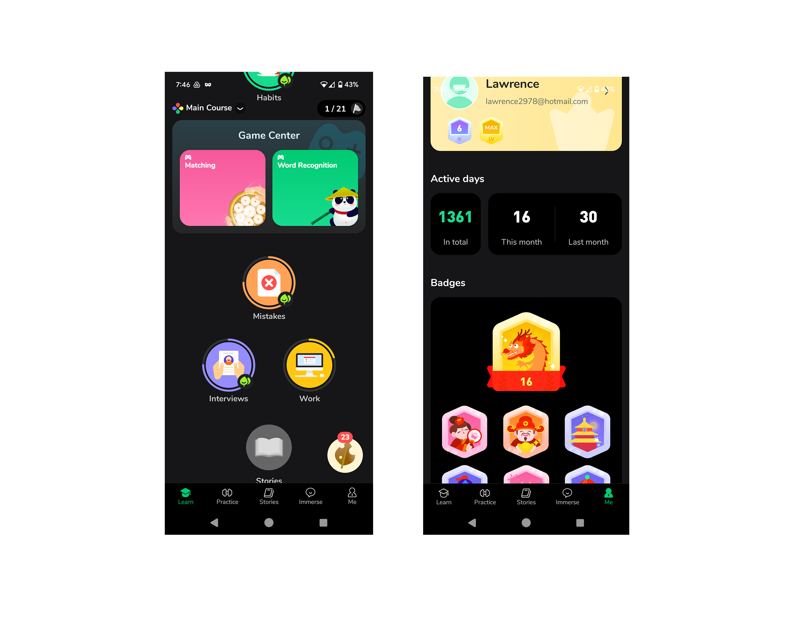
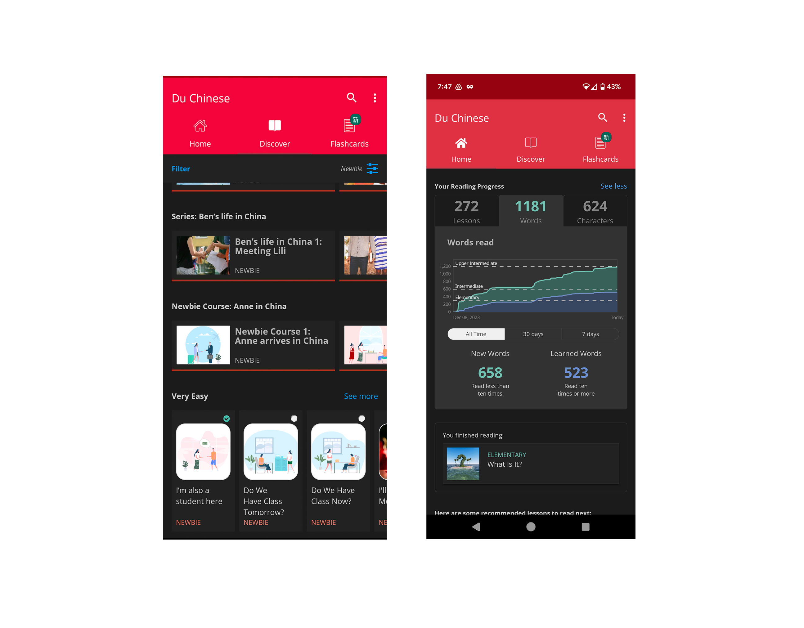

About 5 years ago, I started learning Chinese as a hobby. I tried many of the learning apps and settled on two as having the best features, Hello Chinese for vocabulary and grammar while Du Chinese is my preferred reading app.
As mentioned before, I used many Chinese learning apps over the years. However, there were a few patterns I noticed that I did not care for:
To manage this global sales team, ABC Jewels needed a product inventory solution that allows their consultants to quickly find jewelry based on specific tastes of their clients. A bonus goal would be that this solution would also be needed to help consultants do personalized outreach.
Since I have used so many apps, the competitive analysis was technically already done in my head. I went back and reviewed the ones I liked best and noted things that they did well or had in common,


The Client is also a persona, but they are outside the scope of this case study.
AI is moving much faster than designers can keep up. Having used AI to assist me with Mandarin has given me a lot of exposure to potential UX benefits as well as problems. I’m using ChatGPT 4.0 for this applications so any mention of AI is referring to that AI specifically.
| Benefits | Details |
|---|---|
| Customized Content | Because AI can generate content on the fly, there’s no need to create a large amount of it and store it in a database. The user can tell the AI what topics they want to learn with. |
| Customized Content | Because AI can generate content on the fly, there’s no need to create a large amount of it and store it in a database. The user can tell the AI what topics they want to learn with. |
| More Detailed Feedback | In learning apps, they generally tell you right or wrong. AI can give you more explanation and provide guidance specific to you. |
| Less Repeated Content | The user will never get to the point where they have learned all of the content, because it is generated on the fly per user. |
| Disadvantages | Details |
|---|---|
| Hallucinations | Hallucinations are when the AI is confidently wrong about something. It may make up information if it doesn’t know the answer. The big problem with this when you are learning is that you might not even realize it is not the right answer. |
| Irrelevant content | It doesn’t take much for the user's inputs to cause the AI go off-topic. This can be controlled, but requires extra effort. |
| Downtime | ChatGPT is known to sometimes just be down. They have millions of users everyday so there is just going to be connectivity problems from time to time. |
| Disadvantages | Details |
|---|---|
| Hallucinations | Using the OpenAI Assistant API to preload approved content may solve this. This allows you to train the AI on specific information, and it will only reference that information in its responses. |
| Irrelevant content | Giving the user free rein on text inputs to your AI can be a problem. Of course, you can train your AI to avoid this, but users are clever, and it would require a lot of work and tesitng to esnure that the AI does not stray off- topic. To solve this, when possible the AI will generate options for answers and the user selects from those rather than using the text input. This reduced interaction should prevent off-topic conversation. |
| Downtime | If ChatGPT is down, the user would not be able to do their lessons. To solve this, all the users content will be generated when they pick their topics of interest in the user flow. This will be shown below. |
The idea for the app came to me when I started using ChatGPT to help me study. As mentioned before, the materials in the apps I use was pre-generated and since I have been using the apps for years, I could answer some questions without even looking at it.
This inspired me to instruct ChatGPT to quiz me. Over time, I fine-tuned how I wanted to be tested based on my preferred style of learning. I even instructed the AI to keep track of my performance and recommend topics of study.
What was missing was a nice UI to render this learning experience. ChatGPTs UI is obviously designed to be conversational so I began building a proof of concept to simulate how XiongMao would use ChatGPT to generate personalized and non-repeating content. That proof of concept is a work in progress and can be found here…
Having a variety of test question types is a key part of learning. If the same information is presented in different ways, it becomes more like that the learning will understand. (Include stats if possible). Much of the wireframing revolved around experimenting with different question types for different types of learning.
Visually, the UI for XiongMao needs to at least be of the same style as other language learning apps if I intend to make it public. So I adopted the colorful, playful style of other apps and based it around the color of China’s flag.